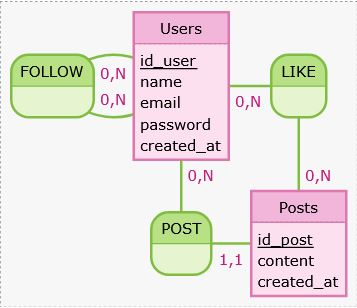

🎯 Contexte du projet
SkyStorm est une réplique allégée de Twitter/X développée en Laravel 12 dans un contexte pédagogique pour la préparation à l'épreuve E6 du BTS SIO option SLAM. Le projet est construit en direct avec la classe afin d'illustrer un cycle complet de développement : conception, modélisation, implémentation et déploiement.
🎓 Objectifs pédagogiques
- Architecture MVC : Comprendre l'architecture MVC de Laravel
- Authentification : Manipuler l'authentification avec Laravel UI (Bootstrap)
- Modélisation : Concevoir un MCD et le traduire en base de données relationnelle
- Eloquent ORM : Gérer les relations n-n et 1-n avec Eloquent
- Fonctionnalités sociales : Implémenter des fonctionnalités sociales (posts, likes, abonnements)
- Git : Structurer un projet Git professionnel
✨ Fonctionnalités principales
1. Inscription / Connexion utilisateur
Système d'authentification complet via Laravel UI avec Bootstrap, permettant aux utilisateurs de créer un compte, se connecter et gérer leur session de manière sécurisée.
2. Gestion des posts
Création, modification et suppression de posts par les utilisateurs authentifiés, avec un fil d'actualité simplifié affichant les publications des comptes suivis.
3. Interactions sociales
Système de suivi entre utilisateurs (follow/unfollow) et système de likes sur les posts, gérés via des relations n-n avec Eloquent ORM.
📸 Captures d'écran

Interface de connexion

Structuration du projet

Gestion des employés
🗄️ Modèle Conceptuel de Données (MCD)

Entités principales :
- USER : Informations des utilisateurs, authentification et profil
- POST : Contenu publié par les utilisateurs
- LIKE : Relation n-n entre utilisateurs et posts
- FOLLOW : Relation n-n entre utilisateurs (abonnements)
🛠️ Stack technique

PHP 8.x
Langage principal du projet

Laravel 12
Framework MVC avec Blade, Eloquent ORM et Laravel UI (Bootstrap)

MySQL / MariaDB
Base de données relationnelle pour la persistance des données
🚀 Défis relevés
- Mise en place de l'architecture MVC avec Laravel 12
- Implémentation des relations n-n (likes, abonnements) avec Eloquent
- Gestion de l'authentification et de la sécurité des routes
- Construction d'un fil d'actualité dynamique basé sur les abonnements
- Structuration d'un projet Git professionnel tout au long du développement